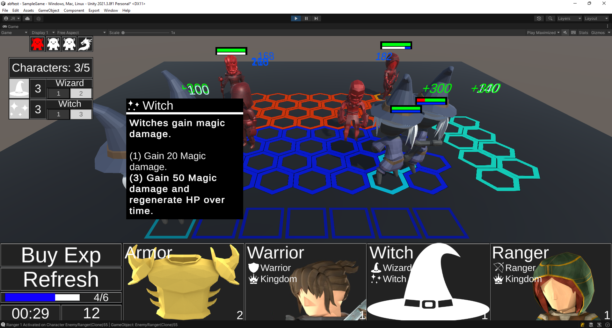
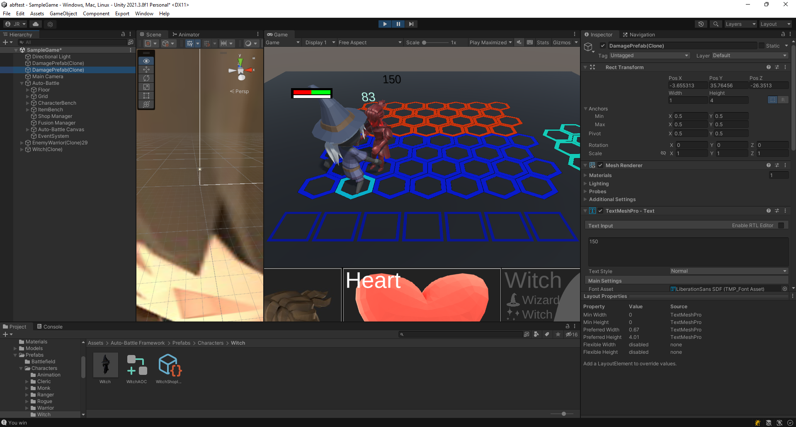

Create a new Buff Effect
A Buff Effect is a temporary effect applied to a character.
Since a Buff Effect inherits from IAttackEffect, Buffs can be applied in the following cases:
When attacking: The effect of a Buff can be obtained when performing an attack. To do so, add the BuffEffect to the Attack Effects list of Modificator in a Trait or another AttackEffect. To apply it on an item, add it to the Attack Effects list of an Item Modificator.
On hit: You can obtain the effect of a Buff when an attack manages to hit the opponent. When the target of the attack is the one that gains the Buff, it is called Debuff.
- To apply a Buff, create a new ApplyBuff Scriptable Object. To do this, right click on the project and click on "Create/Auto-Battle Framework/OnHitEffect/ApplyBuff", and bind the BuffEffect in the Effect variable.
- To apply a Debuff, create a new ApplyDebuff Scriptable Object. To do this, right click on the project and click on "Create/Auto-Battle Framework/OnHitEffect/ApplyDebuff", and bind the BuffEffect in the Effect variable.
- Add the ApplyBuff or ApplyDebuff to the On Hit Effects list of an Attack Effect. It can also be added to the Attack Effects list of Modificator in a Trait or other Buff Effect, or to an Item Modificator in the case of an item.
If you need to apply a Buff in any other situation, simply use this line:
///If effect is a BuffEffect effect.Attack(this, null);
Next, we will create a BuffEffect for the Witch Trait created in Create a new Trait, which will heal the character over time. Witches will gain this Buff when the second Trait Option is applied, i.e., when 3 witches are found on the battlefield. It will be applied on every attack, and if applied again with maximum stacks, it will heal the character even more. This higher healing will also be applied when the Buff runs out.
1. Create a new C# script called RegenerationBuff. Read the script comments for more information.
using UnityEngine;
using AutoBattleFramework.Formulas;
namespace AutoBattleFramework.Skills
{
/// <summary>
/// Heals the owner of the buff over time. When the buff ends, or is reapplied when at full stacks, heals the character by FinalHealTick.
/// </summary>
[CreateAssetMenu(fileName = "RegenerationBuff", menuName = "Auto-Battle Framework/Effects/BuffEffect/RegenerationBuff", order = 1)] //Allows the creation of the Scriptable Object.
public class RegenerationBuff : BuffEffect //Inherits from BuffEffect
{
/// <summary>
/// How often damage is applied, in seconds.
/// </summary>
public float Tick = 1f;
/// <summary>
/// Amount of healing to be applied.
/// </summary>
public float HealTicks;
/// <summary>
/// Amount of healing when the buff ends.
/// </summary>
public float FinalHealTick;
/// <summary>
/// When the last <see cref="Tick"/> was applied.
/// </summary>
float lastTick = 0f;
/// <summary>
/// Displayed color of the damage. Will override <see cref="BattleBehaviour.Battle.EffectColor"/>.
/// </summary>
public Color color;
/// <summary>
/// When the buff ends, heals the character by FinalHealTick.
/// </summary>
protected override void OnBuffEnd(BuffEffectInfo info)
{
BattleFormulas.RecieveDamage(ai, -FinalHealTick * info.stacks, DamageType, color);
}
/// <summary>
/// Set <see cref="lastTick"/> to zero.
/// </summary>
protected override void OnBuffStart(BuffEffectInfo info)
{
lastTick = 0f;
}
/// <summary>
/// If the elapsed time since the last tick is greater, it heals the owner of the buff.
/// </summary>
protected override void OnBuffUpdate(BuffEffectInfo info)
{
if (lastTick + Tick < info.elapsedTime) // Do the next tick.
{
lastTick = lastTick + Tick; // Save the last tick time.
BattleFormulas.RecieveDamage(info.character, -HealTicks * info.stacks, DamageType, color); //Heal the character.
}
}
/// <summary>
/// When the buff is applied again at max stacks, heals the character by FinalHealTick.
/// </summary>
protected override void OnRepeatedBuff(BuffEffectInfo info)
{
if (info.stacks == maxStacks)
{
BattleFormulas.RecieveDamage(info.character, -FinalHealTick * info.stacks, DamageType, color);
}
}
}
}
2. Right click on a project folder, and click on "Create/Auto-Battle Framework/Effects/BuffEffect/RegenerationEffect". This will create a new Scriptable Object of RegenerationEffect.
 Create the Regeneration Effect.
Create the Regeneration Effect.
3. Select the RegenerationBuff and fill in the following fields in its Inspector:
- Damage Type: The type of damage. Set it to Effect.
- Max Stacks: the maximum number of stacks the buff allows. Set it to 3.
- Duration: The maximum time the buff is applied, in seconds. Set to 4.
- Restart Time When Repeated: Resets the buff duration time when a buff stack is added. Activate it.
- Tick: Seconds that must elapse until the buff effect is applied again. Set it to 1.
- Heal Ticks: Amount of life to heal with each tick. Set it to 30.
- Final Heal Tick: Amount of life to heal at the end of the buff or when reapplying it again when the maximum stacks are reached. Set it to 100.
- Color: Color of the damage popup when healing the character. Set a greenish color, make sure the alpha is at maximum.
Set the variables of the Regeneration Buff.
4. Select the Witch Trait created in Create a new Trait.
- Edit the Trait description to "Witches gain magic damage".
- Remove all Attack and On Hit effects from all your Trait Options.
- Edit the description of the first Trait Option to "Gain 20 Magic damage.".
- Edit the description of the second Trait Option to "Gain 50 Magic damage and regenerate HP over time.".
- Add RegenerationBuff to the Attack Effects list of the second Trait Option.
Set Regeneration to the second Trait Option of the Witch Trait.
5. Test the game and gather three witches. Note that until you gather three witches, they do not regenerate health.
 When three witches are gathered, they gain the regeneration buff when attacking.
Create a new Debuff
We will create a Debuff by reusing the Regeneration Buff created in the previous section.
This time, when a witch performs her special attack and hits the enemy, she will apply a Debuff that will do damage over time, and if it is reapplied or runs out, it will do extra damage.
1. Right click on a project folder, and click on "Create/Auto-Battle Framework/Effects/BuffEffect/RegenerationEffect". This will create a new Scriptable Object of RegenerationEffect. Rename it to DegenerationEffect.
Create the Regeneration Effect. Rename it to DegenerationEffect.
2. Select the RegenerationBuff and fill in the following fields in its Inspector:
- Damage Type: The type of damage. Set it to Effect.
- Max Stacks: the maximum number of stacks the buff allows. Set it to 3.
- Duration: The maximum time the buff is applied, in seconds. Set to 4.
- Restart Time When Repeated: Resets the buff duration time when a buff stack is added. Activate it.
- Tick: Seconds that must elapse until the buff effect is applied again. Set it to 1.
- Heal Ticks: Amount of life to "heal"" with each tick. Set it to -30, so it damages instead.
- Final Heal Tick: Amount of life to heal at the end of the buff or when reapplying it again when the maximum stacks are reached. Set it to -50, so it damages instead.
- Color: Color of the damage popup when healing the character. Set a dark color, make sure the alpha is at maximum.
Set the variables of the Degeneration Buff.
3. Right click on the project and click on "Create/Auto-Battle Framework/OnHitEffect/ApplyDebuff" to create a new ApplyDebuff Scriptable Object, rename it to "ApplyDegenerationDebuff".
Create the ApplyDebuff Scriptable Object. Rename it to ApplyDegenerationDebuff.
4. Select ApplyDegenerationDebuff and bind the DegeneratonEffect in the Effect variable in the Inspector.
Add DegenerationEffect to ApplyDegenerationDebuff.
5. Select the WitchSpecialAttackEffect, created in Create a new Attack Effect, and add ApplyDegenerationDebuff to the On Hit Effects list. Add ApplyDegenerationDebuff to the On-Hit Effects list of WitchSpecialAttackEffect.
6. Test the game. Note that when the witch makes her special attack, extra damage is applied after a while.
 When the witch makes her special attack, extra damage is applied after a while (150 black damage popup).